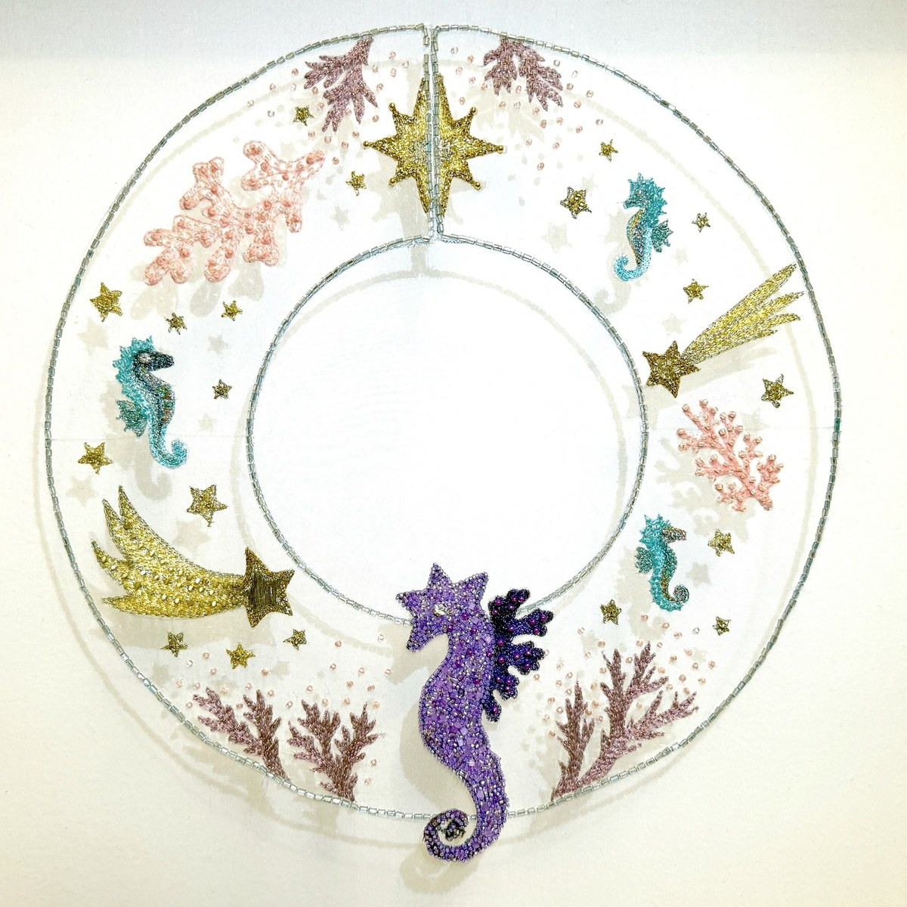
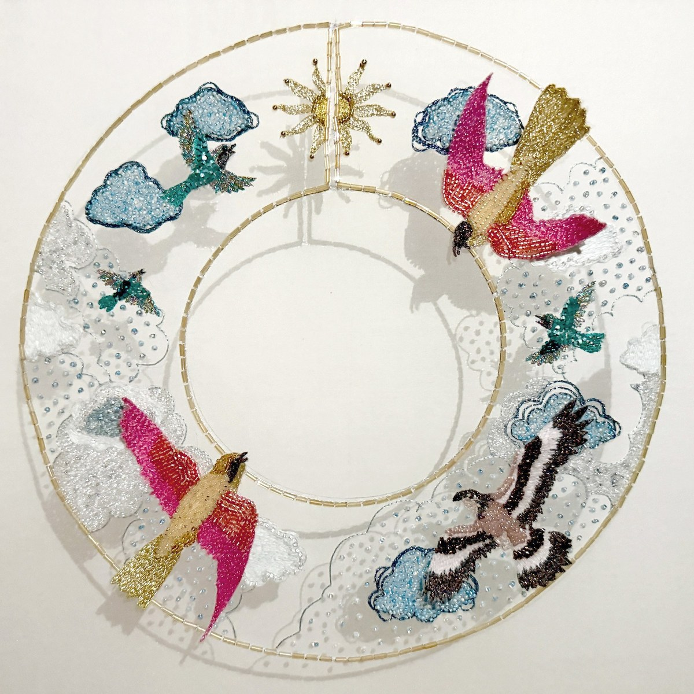
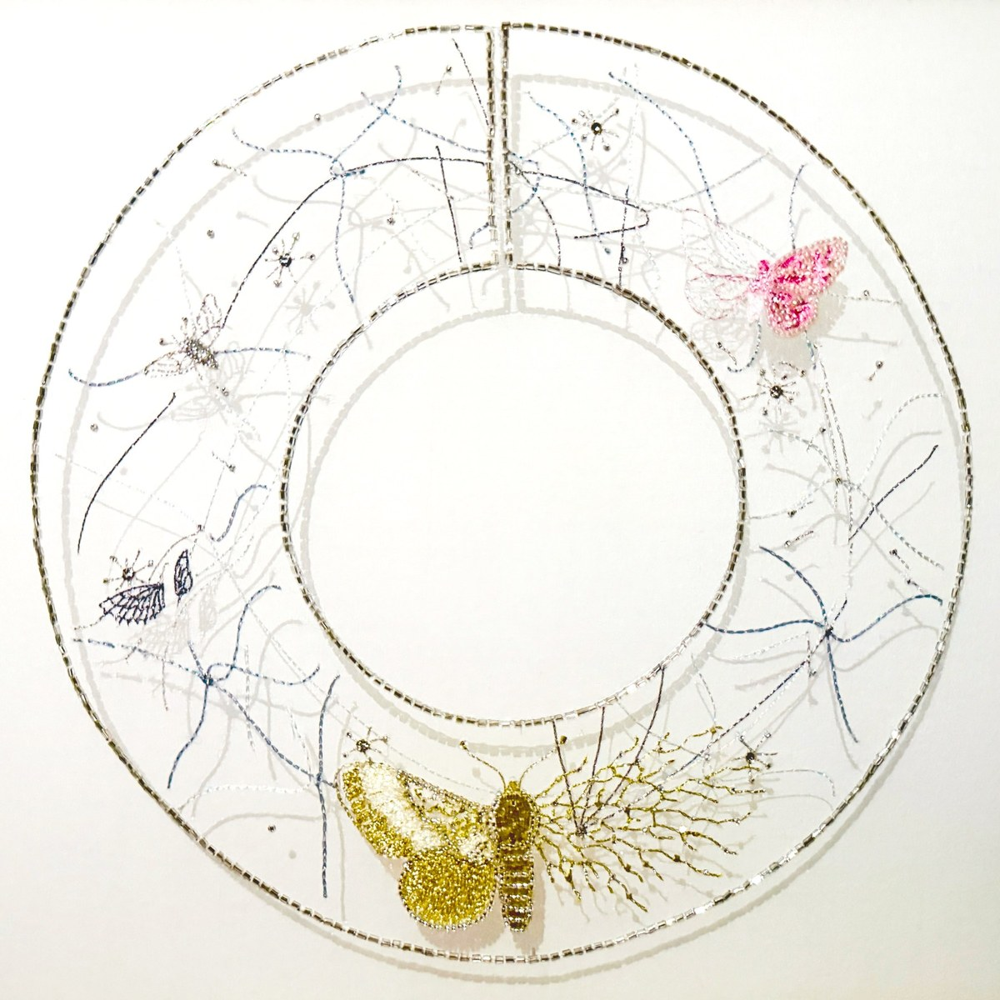

creaturely
2026
Each of the animations in creaturely began from a poem written in the form of a Python script which took as its starting point a quote in Mary Shelley’s Frankenstein from the creature's own narrative of his awakening consciousness. The animations borrow the form of the calligram, as each poem seeks to bring to life its content. Letters morph into a seahorse, birds, and moths, which multiply, sing, or tremble in response to real-world data including hydrophone recordings, radio waves from the magnetosphere, birdsong, and fungal electrical signals.



Three embroidered collars bring the imagery from the animations into physical form, connecting the human hand to the virtual world and extending the collaboration through embodied and tactile experience.